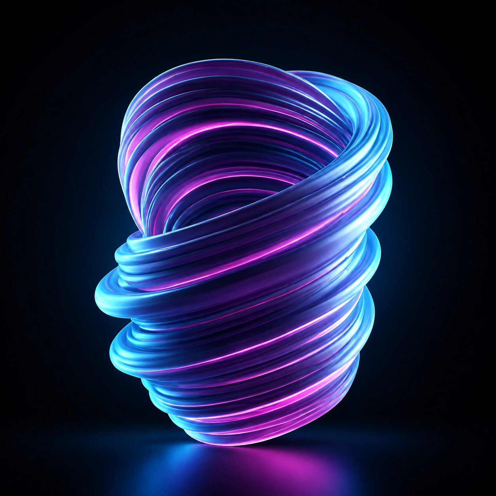

بيانات مشتتة
صعوبة اتخاذ قرارات مبنية على حقائق بسبب تفرق البيانات بين منصات مختلفة.

نحن لا نقدم حملات عابرة، بل نبني أنظمة نمو متكاملة تربط بين ذكاء البيانات، وتكنولوجيا الأتمتة، والاستراتيجيات الإبداعية لتحقيق عائد حقيقي على الاستثمار.
نساعدك على تجاوز العقبات التشغيلية والاستراتيجية التي تمنع نموك الرقمي
صعوبة اتخاذ قرارات مبنية على حقائق بسبب تفرق البيانات بين منصات مختلفة.
ارتفاع تكاليف الاستحواذ مع ضعف في تحويل الزوار إلى عملاء فعليين.
الاعتماد على التكتيكات العشوائية بدلا من خطة نمو مستدامة وطويلة الأمد.
عمليات تسويقية يدوية بطيئة تستهلك الموارد ولا تواكب سرعة السوق.
هوية مؤسسية لا تعكس القيمة الحقيقية أو لا تصل للجمهور المستهدف بشكل صحيح.
عدم القدرة على ربط المصاريف التسويقية بالنتائج المالية الملموسة.
نحدد المحاور لتحقيق نتائج ملموسة في الربع الأول من التعاون
تحليل عميق للقنوات الحالية، المنافسين، وسلوك الجمهور المستهدف.
إعادة تصميم رحلة العميل لتقليل الفاقد وزيادة معدلات التحويل المباشر.
ربط أدوات القياس والتحليل لضمان دقة التقارير لحظة بلحظة.
بدء تنفيذ حملات محتوى استراتيجية تخاطب احتياجات العميل الحقيقية.
إدخال الذكاء الاصطناعي لتشغيل الحملات الروتينية بكفاءة عالية.
مراجعة النتائج النهائية وتطوير استراتيجية التوسع للمراحل القادمة.
نحو استراتيجية تسويقية تربط بين الأهداف التجارية والنتائج القابلة للقياس.
تشمل خدماتنا:حول بيانات التسويق إلى رؤى تساعدك على اتخاذ قرارات أكثر ذكاء.
تشمل خدماتنا:أنشئ تجربة عميل متكاملة تعمل تلقائيا وتزيد فرص التحويل والمتابعة.
تشمل خدماتنا:نبني علامات تجارية قوية ترتبط أثرا دائما وتعزز الثقة والنمو.
تشمل خدماتنا:حملات إعلانية مصممة تركز على الأداء والعائد الحقيقي على الاستثمار.
تشمل خدماتنا:
عملية منهجية لنقلك من التشتت إلى الريادة
فهم واقعك وتحدياتك
بناء خارطة العمل المتكاملة
تجهيز الأدوات والبيانات
إطلاق الحملات والعمليات
التطوير بناء على البيانات
تحقيق النمو المتسارع
خبراء متخصصون يجمعون بين الاستراتيجيات والنمو.
نعتمد على التحليل ونضمن لك دقة القرار.
تقنيات تسويق متقدمة لتفعيل القنوات المختلفة وقياس الأثر.
نربط كل عمل بمؤشرات أداء KPIs واضحة.
رؤية كاملة لاحتياجات السوق الخليجي والعربي.
شراكة طويلة تساعدك على النمو بخطوات محددة وواقعية.

بناء خطة تحول تربط بيانات العملاء بالعمليات ومؤشرات الأداء لتحسين جودة القرارات.
اقرأ المزيد
تحليل مسارات العمل وتحديد فرص أتمتة ساعدت الإدارة على تسريع الإجراءات الداخلية.
اقرأ المزيد
تصميم سياسات استخدام واضحة للبيانات والنماذج الذكية داخل بيئة مؤسسية منظمة.
اقرأ المزيدخبرة استشارية متخصصة في متطلبات كل قطاع.
ساعدنا فريق مساقي على ترتيب الأولويات وتحويل الأفكار التقنية إلى خطة تنفيذ واضحة للإدارة.
خرجنا بخارطة طريق عملية ومؤشرات أداء ساعدتنا على قياس أثر مبادرات الذكاء الاصطناعي.
العمل لم يكن تقنياً فقط، بل بدأ من نموذج العمل والتحديات الفعلية داخل المؤسسة.